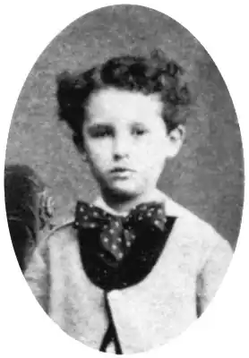
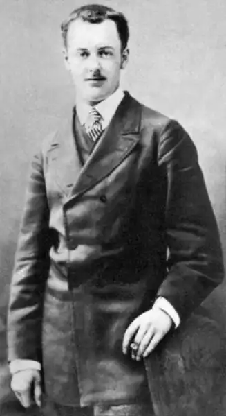

Дата народження: 5 серпня 1850 року
Місце народження: Міроменіль, Франція
Дата смерті: 6 липня 1893 року Місце смерті: Париж, Франція Анрі Рене Альбер Гі де Мопассан – французький письменник. Гі де Мопассан народився 5 серпня 1850 року в Нормандії в сім'ї дворянина і буржуа. Батько незабаром розорився, а після народження другої дитини, розлучився з матір'ю Анрі. Правда, до цього встиг прищепити Анрі любов до музики, живопису та літератури. Мат після розлучення вирушила в місто Етрет, а Гі пішов за нею. У 13 років він почав навчатися в духовній семінарії, але з-за свого активного характеру, Мопассан не зміг там вчитися і постійно втікав, в ці ж роки проявляється його письменницький талант у вигляді вірша Давно відчужений від світу. У 16 років він починає вчитися в ліцеї, а після нього в 20 років вступає на навчання юриспруденції, але й через війни не встигає його закінчити і воює у франко-прусській війні. На війні був простим рядовим, а після неї почав надолужувати втрачені знання. Сім'я Мопассанов була розорена, тому, що прогодувати рідних, Гі страивается на роботу в морське міністерство, де пропрацював в якості чиновника 10 років. Література продовжувала його захоплювати, і він написав першу новелу Спадщину, за нею пішла друга В лоні сім'ї, а письменника почали пізнавати і любити за відкритий ним внутрішній світ життя чиновників. У 1880 році він написав новелу Пампушка, яка принесла йому славу і успіх. За неї він отримав відпустку на півроку і зайнявся літературною діяльністю. За наступні 11 років він написав близько 60 творів і безліч віршів, об'єднаних у збірники. Найвідомішими творами автора є Милий друг, Життя і На воді. У 1884 році його вперше накриває напад душевної хвороби, а також відкривається, що він хворий на сифіліс. У 1891 році він поривається вбити себе, за що його уклали в лікарню для душевнохворих. У 1893 році він помирає від паралічу головного мозку. Досягнення Гі де Мопассана: • Безліч творів і віршів, перші оповідання в жанрі еротики Дати з біографії Гі де Мопассана: 5 серпня 1850 – народився в Мироминеле 1863 рік – навчання в коледжі 1866 рік – навчання в ліцеї 1870 рік – почав навчатися юриспруденції 1880 рік – перший розповідь 1891 рік – напади душевного божевілля 6 липня 1893 року —помер Цікаві факти Гі де Мопассана: • Любив обідати на Ейфелевій вежі, так як вважав, що вона потворна, а обід в ній дозволяє бути єдиним місцем, звідки її не видно • В останні роки життя всі його твори на тему божевілля і смерті